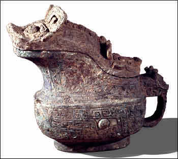

Anyang
Modern Anyang is the site of the last capital of the Shang dynasty, which was called Yinxu. Yinxu was an important city from about 1300 B.C. to 1050 B.C. The first archaeological evidence of this period was discovered here. The remains of many tombs as well as monumental buildings have been found at this site and in nearby villages. The tomb of Fu Hao, a consort of a Shang dynasty king, was found at Anyang. The tomb is the only intact tomb found from this period.

Bronze jug of the type found in Fu Hao's tomb |